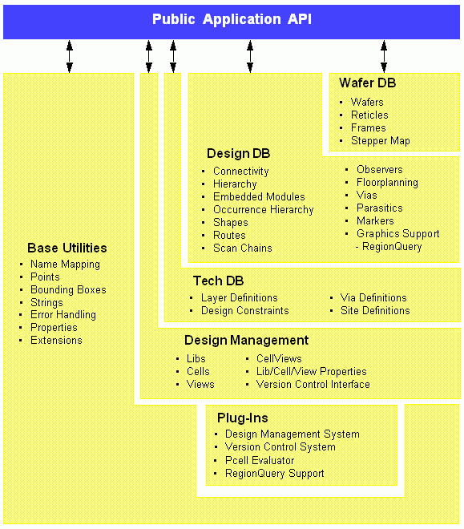

OpenAccess Overview
OpenAccess provides an infrastructure designed to promote the interoperability of EDA applications and design data. The infrastructure is a C++ API that defines classes and member functions to create, access, and manage databases that describe designs as they evolve through the design process to implementation.
This document describes the following:
OpenAccess API Packages
The OpenAccess API is structured into a set of packages, each of which provide the implementation of part of the total functionality. Each package has one top level header file that a program must include to access the package classes and functions. Each package is distributed in the form of a shared library that contains the implementation of its functions. An application must link against the shared library to call those functions.
The debug versions of the shared libraries perform additional API argument checking that is not available in optimized libraries. OpenAccess will likely crash if incorrect arguments are used in API calls. The debug versions of the libraries perform additional checking for common errors such as incorrect argument values, which throw exceptions where optimized libraries crash. As an application developer, you must ensure that OpenAccess APIs are called with valid and consistent arguments to avoid application crashes when optimized libraries are used.
OpenAccess supports three kinds of databases: design, technology, and wafer. Each database has its own data model, which is the description of the objects that can reside in that database, their relationships with other objects, and their proper usage by EDA applications. The OpenAccess C++ API contains classes that represent these objects and member functions for traversing the relationships between them.
Each of the three kinds of databases has its own package in OpenAccess. There are three additional packages, for a total of six:
The six packages and the public API are shown below.

Design Database Package
The design database package is the oaDesign API. It manages designs and everything they contain. Designs refers to the design-specific representation of all the objects in a particular piece of a design, including the layouts, netlists, and schematics. A managed class is defined as having data that is persistently stored in an OpenAccess database. The managed classes in the design database package derive from the oaDesignObject class.
Design databases include connectivity, hierarchy, layout, floorplanning, place and route controls, and parasitics.
Technology Database Package
Technology databases hold data that is not specific to one part of the design, but can be generally applied across the all designs made from a given technology. These include descriptions of vias that can be used and the definitions of layers that are available. The technology database also contains the routing and foundry constraints that specify which design geometries can be manufactured.
Managed classes in this package are derived from the oaTechObject class.
Wafer Database Package
Wafer databases contain the layout of chips as they are processed for manufacturing. A wafer database holds both the layout of the reticles that are used to manufacture each layer and the plan for stepping the reticle images across the entire wafer.
Wafer databases are still in experimental usage and the data model is subject to change.
Managed classes in the Wafer database derive from the oaWaferObject class.
Design Management Package
The Design Management package organizes design libraries that contain all the data files needed to describe designs. This includes OpenAccess databases and all other files used by EDA applications to contain design data. This package provides a structure that has lib, cell, and view containers that are used to organize those data files.
OpenAccess lets you select between various design management systems when you create design libraries. These DM systems are implemented as plug-ins that can be found at run time.
The Design Management API in OpenAccess also provides functions to access version control capabilities such as the ability to update a library from versions checked into a remote repository. OpenAccess does not implement these functions, but a vendor can provide an implementation as a plug-in that gets automatically loaded at run time.
Managed classes in the DM package derive from oaDMObject.
Base Package
The Base Package provides objects that are used by more than one database and provides generic infrastructure capabilities. It handles such things as names, strings, and properties. Managed classes in the base package derive directly from oaObject.
Plug-In Package
OpenAccess allows certain functions of the API to be customized at run time through the use of plug-ins. Plug-ins let the end user choose the implementation for select capabilities using software that might not have been available when the application was linked.
The Plug-In package does not have an API that is used by typical applications. However, some functions in OpenAccess automatically locate and use plug-ins. This includes the Design Management API, the Version Control API, and programmable cell (Pcell) evaluation.
API Programming Examples
Code examples are available in your installation hierarchy under <install_dir>/examples/oa. Separate sub-directories contain source code and a header file for common programming tasks.
Compiling the Examples
The required GNU make utility for building the examples is GNU make version 3.80. It is recommended that you rename the make utility as gmake. This will prevent older, incompatible versions of make from being called.
To compile the examples in debug mode, do the following:
cd /examples/oa
gmake
To compile in optimized mode, use the OPTMODE argument:
gmake OPTMODE=opt
Running the Examples
Each example directory includes a log.ref file that contains the expected output. The <install_dir>/examples/oa/test/bin/runExamples script runs all the examples at once. You can use the following switch to suppress the output and report only whether each example passed or failed:
runExamples -q
By default, the examples are run in debug mode. To run them in optimized mode, set the following environment variable first:
setenv OA_MODE opt
You can run the examples individually as well. For instance:
cd HelloWorld
./run -q
Optionally Choosing a DM System for Running the Examples
Before you run the programming examples, you can choose the DMSystem to use for design management. The default DMSystem for your OpenAccess installation is set in the file <installation_dir>/data/plugins/oaDMSystem.plg. You can choose a different DMSystem for the programming examples by setting the $DMSystem environment variable. The values for this environment variable are either oaDMFileSys or oaDMTurbo. This environment variable is used only for the programming examples; it is otherwise ignored by OpenAccess. See OpenAccess Libraries and Design Management for more information about DMSystem.
To better understand how to run the programming examples, refer to Getting Started—A HelloWorld Example. After working through HelloWorld, you are ready to look at the examples below.
Listing of Examples
- BlockOverrides
Shows how to perform physical implementation of tie-off nets in the block domain. The program opens a design and replaces all oaTerms and oaInstTerms on tie-high nets with block domain overrides on net vdd. If the net vdd exists it is used, otherwise a physical-only version is created.
Format: Command-line program with three required arguments: library, cell, and view name.
- Callback
Demonstrates two classes of oaObserver usage.
- connObsvrs in ConnectivityCB demonstrates the use of oaObservers for oaNet, oaTerm, and oaInstTerm objects. Creates a database and modifies it to show the action of the oaObservers. Creates DesignLib/ConnectionCB/netlist (design/cell/view).
Format: Command-line program with no arguments
- designCB demonstrates the use of the oaObserver class with the oaDesign object. Creates an instance of the observer and operates on the design based on input arguments.
Format: Command-line program with four required arguments and two optional arguments. Required arguments are library, cellname, viewname, and mode. Mode can be 'w', 'r', or 'a'. The two optional arguments can be 'sv' (save), 'sa' (save as) <view name>, 're' (reopen), 'rv' (revert), 'pr' (purge), and 'op' (open). Arguments 'op' and 're' take an additional mode argument, 'sa' takes an additional <view name> argument.
- Connectivity
- connectDef
Shows how to create connection definitions on nets and terms in a block and assign values to these definitions. This example creates the necessary designs in the specified library.
Format: Command-line program with one command-line argument: library name.
- printAssignments
Opens the given design and prints the assigned connections and “AssignDefs” in that design.
Format: Command-line program with three required arguments: library, cell, and view name
- connectivity
Shows how to create various types of connections including multi-bit and single-bit connections.
Format: Command-line program
- mBitConnectivity
Opens the given design and prints the bitwise-connectivity information.
Format: Command-line program with three required arguments: library, cell, and view name
- Constraints1
Illustrates the basic functionality for creating constraints and derived layers. This example performs the following tasks:
- Creates a constraint and adds it to an oaConstraintGroup.
- Creates a custom oaConstraintDef.
- Creates oaConstraintGroups with AND and OR semantics.
- Creates derived layers.
- Creates constraints and derived layers that are scoped to a particular purpose.
- Constraints2
Illustrates additional functionality for creating constraints and oaConstraintGroups and associating them with groups. This example example performs the following tasks:
- Creates a differential pair including reflexive and transreflexive constraints and associated connectivity and groups.
- Creates a shielding oaConstraintGroup and associated connectivity and constraints.
- Creates a taper oaConstraintGroup and associated connectivity and constraints.
This example also includes a constraint traverser/checker that demonstrates the constraint scoping and precedence rules.
- DbContents
Prints the contents of the design. If you specify the -hier option, the example traverses the hierarchy and prints the contents of all the designs.
Format: Command-line program with three required arguments: library, cell, and view name
- EMH
Demonstrates embedded module hierarchy implemented in OpenAccess. The example shows how to modify a design in a block, module, or occurrence domain and shows how a change in one domain can cause changes in the design in other domains. The example performs the following tasks:
- Creates a block hierarchy in a design.
- Creates a module hierarchy in the same design.
- Creates a net in the top-level module and the leaf-level module.
- Prints the net names in the top-level block to demonstrate the effect of adding nets in the module domain.
- Creates a net in the top-level block.
- Prints the net names in the top-level module to demonstrate the effect of adding nets in the block domain.
- Creates an instance of leaf-level block in the leaf-level module.
- Creates an instance of design in the top-level block.
- Prints the names and details of instances in the block and module domains.
Format: Command-line program with no command-line arguments
- HelloWorld
Shows how to build a simple application based on OpenAccess. Refer to Getting Started—A HelloWorld Example for details.
- Hierarchy
Shows how to traverse a hierarchical design in the block domain. The example performs following tasks:
- Opens the view.
- Runs the instance iterator.
- Gets the master of this instance and repeats the above steps to traverse the hierarchy.
- While traversing the hierarchy, the example prints following data:
- Name of the instance
- Origin of the instance
- Level on which this instance is used in the hierarchy
- Total number of instances on a particular a level
- Number of bound instances
- Number of unbound instances
- Number of designs which do not have instances
Format: Command-line program with three required arguments: library, cell, and view name
- IncrTechDB
Shows how to create incremental technology databases and read them. The example also demonstrates how conflicts can occur in incremental technology databases, and how to register observers to detect and report conflicts. The example performs the following tasks:
- Derives and instantiates an oaTech conflict observer.
- Creates a base technology database.
- Creates an incremental technology database that references the base technology database.
- Creates an oaTech database in each library.
- Inserts objects into each oaTech.
- Lists the layers in each oaTech and in the full set of incremental technology databases.
- Edits the base oaTech out of context and inserts conflicts.
- Calls oaTech::open(), oaTech::validate(), and oaTech::setRefs() on the incremental oaTech database.
- Each call causes the conflict observer to be notified.
The resulting output shows 21 conflicts for each of the following functions:
- oaTech::open
- oaTech::validate
- oaTech::setRefs
The oaTech::setRefs() call also results in an exception.
- instQuery
Shows how to use the oaInstQuery class to query the instances present in the given region. The example performs following tasks:
- Inherits from the oaInstQuery class and provides an implementation for the queryInst() function.
- Creates a hierarchical design with three levels.
- Runs the instance query with different bounding boxes and filter sizes.
Format: Command-line program with no command-line arguments
- LibStructure
Demonstrates how to traverse the design library, cell, and view. Depending upon the command-line options, the example will traverse the library, cell or view and print their names, or it will print the names of files stored in the library, cell, or view.
Format: Utility with various command-line options (-h lists the supported command-line options).
- LPP
Opens the given design and iterates over the layer purpose pairs in the design. The example prints the types and bounding boxes of shapes that are present on the layer purpose pairs.
Format: Command-line program with three required arguments: library, cell, and view name
- Nmp
Accepts a string in a particular namespace and prints that string in all the namespaces supported by OpenAccess. This illustrates how different namespaces modify the string according to their rules.
Format: Command-line program with two required arguments: namespace (one of “Cdba”, “Unix, “Win”, “Lef”, “Def”, “Native”, or “Verilog”) and the string to analyze.
- regionQuery
Shows how to use the oaShapeQuery class for querying the shapes present in the given region. This example also shows how to access an occurrence of a shape found in the given region. The example performs following tasks:
- Inherits from the oaShapeQuery class and provides an implementation for the queryShape() function.
- In the queryShape() function, obtains an occShape from an oaShape and a bounding box. The hierarchical path and type of that shape are printed.
- Creates a three-level hierarchical design with shapes.
- Runs the shape query with different bounding boxes and filter sizes.
- Inherits from the oaLayerRangeBlockageQuery class and provides an implementation for the queryBlockage() function.
- Inherits from the oaBlockageQuery class and provides an implementation for the queryBlockage() function.
Format: Command-line program with no command-line arguments
- PinConnections
Demonstrates different types of pin connections.
There are three types of connections:
- Must Join
- Weak
- Strong
Format: Command-line program with no command-line arguments
- PinsTerms
Shows how to traverse the connectivity in the block hierarchy. The example performs following tasks:
- Opens the given design.
- Iterates over the nets in the design.
- Iterates over oaTerms in each net and prints their names.
- Iterates over oaInstTerms in each net and traverses the hierarchy.
Format: Command-line program with three required arguments: library, cell, and view name
- Route
Calculates the area of each route in the given design. The example demonstrates the use of the oaRoute API.
Format: Command-line program with three required arguments: library, cell, and view name
- TermOrdering
Demonstrates terminal ordering. You can create and destroy terminals as well as assign positions to terminals. You can also print ordered and unordered terminals.
Format: Interactive, menu-based command-line program
- TimeStamp
Shows how timestamps change on OpenAccess objects as they are modified. The timestamp on a particular object changes if any other object owned by this object is modified. This example prints the timestamps of design, net, terminal, shape, and pin objects as they are created or modified. In the result, the modified timestamps are marked with an asterisk (*).
Format: Command-line program, no command-line arguments
- Transform
The following two examples explain the concept of transform in OpenAccess.
- Hierarchy Transform
Opens the given design and traverses it to find the given instance. After finding the instance, it calculates its transform with respect to the top-level design. The example requires the library, cell, and view name of a top-level design followed by instance names.
Format: Command-line program with four required arguments: library, cell, and view name, followed by the instance name.
- Shape Transform
Opens the given design, iterates over all the shapes, and rotates them about the center of the design through the given angle.
The example requires the library, cell, and view names and the angle of rotation.
Format: Command-line program with four required arguments: library, cell, and view names, plus the angle of rotation.
- Via
Shows how to create custom and standard oaViaDefs, oaVias, and oaViaVariants. The example includes sample LEF and DEF files to create the initial design and technology data. The example shows how to:
- Create oaStdViaDefs and use them to create oaStdViaVariants.
- Create oaStdVias from oaStdViaVariants. Replace an oaStdVia with a different one by searching for an oaStdViaVariant with a specific parameter combination.
- Create a Pcell based oaCustomVias and write a simple in-memory Pcell evaluator.
- Create oaCustomViaVariants from parameterized oaCustomViaDefs.
- Create oaCustomVias from oaCustomViaVariants. Find oaCustomViaVariants by parameter combination.
- Create design-specific oaViaVariants and add them to an oacValidRoutingVias constraint.
- Create a constraint group with an oaConstraintGroupDef named LEFDefaultRouteSpec that references the oacValidRoutingVias constraint.
Format: Command-line program with three required arguments: library, cell, and view name
- PCells
Demonstrates how to create a Pcell factory, the plug in, and how to add it to your application.
- The Pcell factory is defined in the subdirectory myPcell by the files
myPcell.h and myPcell.cpp.
- The
myPcell.plg is the plug in file needed by your application to connect it to the Pcell factory dynamic library.
- The
PCells.cpp file demonstrates how to connect your PCell factory via the oaIPcellLInk() function call. It then creates two instances of the myPcell plug in and binds them to the application so that they are then evaluated. The resulting evaluated subMaster contents are printed out.
- This example also demonstrates:
- The usage of the OA_PLUGIN_PATH environment variable, which is used to locate
.plg files.
- The usage of oaPcellObserver to receive notifications of errors during Pcell evaluation.
- Format: Command-line program with no arguments
- Wafer
Demonstrates the use of the API in the oaWafer database. This example also shows how the design and wafer databases are related to each other.
- FeatureBasedCompatibility
This example contains two programs:
- createNewFeatures
Creates two features in a design:
- New ConstraintGroupDef (from datamodel 4)
- Reference to FigGroup (from datamodel 2)
- openDesign
Initializes OpenAccess with datamodel 0 and attempts to open the design. As a result, the oaCompatibilityError exception is caught and the handleFBCError function prints a list of unsupported features in the design.
Return to top of page
Return to Programmers Guide topics
Copyright © 2001-2010 Cadence Design Systems, Inc.
All rights reserved.